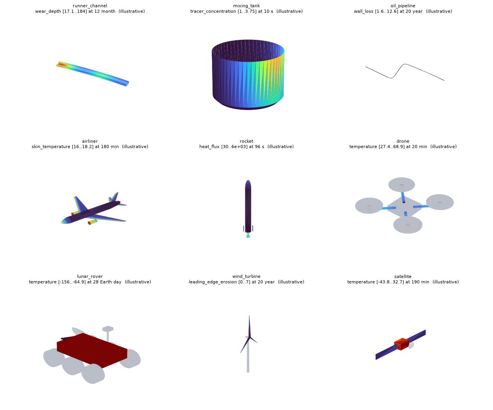

Recreate a 3D wear twin (refractory, liner, pipe wall)¶
This guide shows how to rebuild, with PINNeAPPle, the kind of digital twin that monitors wear of a lining over time: a 3D vessel coloured cell by cell, a remaining-life forecast, and a maintenance schedule that comes out of an executable algorithm. It was written after reverse-engineering five published reference twins (steel ladle, pig-iron ladle, BOF converter, RH degasser and a smelting-reduction reactor); all five are presets.
Everything lives in pinneapple_twin3d.wear; the 3D viewer is the one pinneapple_twin3d already ships.
1. What these twins actually are¶
Reading the published reference apps (single-file HTML + three.js) showed what is real in them, and it is less and simpler than the visuals suggest:
| Piece | What it really is |
|---|---|
| Geometry | A surface of revolution per zone (wall, cone, floor, snorkel leg), cut into rows x sectors cells. |
| Data | Wear depth [mm] per cell and per reading x (heat number). One contract for every vessel. |
| Colour | The consumed fraction of the usable thickness, wear / (e0 - emin), mapped to a colour ramp. |
| Forecast | Linear least squares of the residual thickness over the last ~30 heats of each cell; remaining life = (residual - emin) / -slope. Nothing more. |
| Process animation | Decoration (pours, jets, rotation). Not part of the wear model. |
| Demo data | A synthetic generator inside the app (hot spots × growth law). The embedded dataset was empty. |
What the originals do not contain: arrival-time (ETA) prediction, geographic maps, an optimizer. The optimizer in this module is new, so it is documented as such (section 5).
So a "wear twin generator" needs only: a spec, a dataset, the forecast, an optimizer, and a viewer.
2. The five steps¶
from pinneapple_twin3d import serve
from pinneapple_twin3d.wear import (HotSpot, VesselSpec, ZoneSpec, synthetic_campaign,
forecast, optimize, export_wear_twin)
Step 1 - Describe the part (VesselSpec)¶
A zone is a profile polyline (r, y) in metres, revolved around the vertical axis:
wall = ZoneSpec("wall", "Wall", ((1.2, 0.0), (1.2, 2.0)), n_rows=12, n_sectors=24, e0=200, emin=80, group="wall")
floor = ZoneSpec("floor", "Floor", ((0.0, 0.0), (1.2, 0.0)), n_rows=5, n_sectors=24, e0=250, emin=100, group="floor")
spec = VesselSpec("tank", "Cylindrical tank", (wall, floor), x_name="batch")
- wall / cone / neck: points along the hot face from bottom to top (a cone is just two points with different
r); - floor:
(0, y) -> (R, y); rows are rings; a dished floor is a polyline of an ellipse (see the BOF preset); - off-axis parts (the RH snorkels):
center=(x, z), andtheta0to orient sector 0; e0is the new thickness andeminthe minimum allowed, both in mm. They drive the colour scale and the limit.
Row 0 is the first profile point; sector 0 starts at angle theta0, angles run counter-clockwise seen from
above. Use the same convention in your drawings so rows/sectors match the plant's brick numbering.
Step 2 - Get a dataset (WearDataset)¶
- Measured (the real thing): a CSV
zona,fiada,setor,valor,corrida(same columns as the reference apps) or the JSON contract.WearDataset.from_csv(spec, text)/from_contract(spec, dict). Missing cells areNaN. - Synthetic (before real data exists):
synthetic_campaign(spec, hotspots, ...).HotSpot(zone, s, theta, ds, dtheta, amp)places a Gaussian bump of extra wear at positions(0..1 along the profile) and angletheta(None= a band all around). Repairs can be simulated (repairs=,repair_zones=).
Synthetic data is labelled in the dataset (origin="synthetic"), in the viewer title and in the report. Do not
remove those labels: a demo that looks like plant data is a liability.
Step 3 - Forecast (forecast)¶
fc = forecast(ds) # per zone: worst consumed fraction, remaining life (in x), wear rate, critical cell, confidence
Details that matter (all tested, and identical in the JavaScript core of the web suite):
- the fit window is
win_x=30heats, widened to at leastmin_pts=8readings when readings are sparse; - a repair (a drop of wear larger than 2 % of the usable thickness between readings) restarts the window, so gunning does not poison the slope;
- a cell already at the limit has remaining life
0but its wear rate is still estimated, which the optimizer needs; - flat or recovering cells give
inf(no trend); confidence("low/medium/high") grades the fit (points and R²). It is not a probability.remaining_lo/remaining_higive a 90 % interval from the standard error of the slope (Student-t, needs n >= 3), i.e. the ETA "in ~181 heats (150-230)". It measures the fit; it cannot cover a change of regime. With the 3 readings of the smelting-reduction demo the interval is wide and the confidence "low", which is the honest answer.- a >8 % dip between readings is read as a repair; at twice the default instrument noise ~1 % of cells are truncated by that heuristic (measured, see the tests). If your plant logs repairs, prefer passing them explicitly.
- it is a linear extrapolation: it cannot foresee a change of regime (a new slag, a changed blow practice).
backtest(ds)compares past predictions with the heat where the limit was actually reached, when that happened.
Step 4 - Optimize maintenance (optimize)¶
res = optimize(fc, OptimizerConfig(horizon=300, heats_per_day=24))
res.recommended, res.baseline, explain(res)
Three policies are simulated over the horizon on the forecast: run to the limit (reactive), fixed calendar,
and predictive grouped stops (stop before the earliest deadline minus a safety margin, serve together the zones
whose deadline falls inside a grouping window, search the window). Cost = stops (setup + hours) + zones served +
a penalty per heat operated beyond the limit. The recommendation is the cheapest policy with no breach.
Calibrating the assumptions¶
The defaults are relative placeholders. calibrate(stops, ds) replaces what the plant's own records can support and
says so for each parameter:
from pinneapple_twin3d.wear import StopRecord, calibrate
cal = calibrate([StopRecord(zones=['fundo', 'cone'], duration_h=11, cost=220), ...], ds)
cal.cfg # an OptimizerConfig with the calibrated values
cal.report # per parameter: value, source (calibrated | default | business input), n, standard error, note
| Parameter | Estimated from | Needs |
|---|---|---|
setup_hours, hours_per_zone |
duration = setup + per_zone * n_zones over the stop log |
>= 3 stops, >= 2 different zone counts |
cost_per_hour, cost_per_zone |
cost = c_h * duration + c_z * n_zones |
>= 4 stops with a cost |
recovery_frac |
median wear drop / usable thickness at the repairs detected in the dataset | >= 20 repaired cells |
breach_cost_per_x, safety_margin, horizon, heats_per_day, fixed_interval |
never inferred: business decisions | - |
A fit that gives a negative time or cost is rejected and the default kept. The web hub has the same panel
(upload a CSV zonas,duracao_h,custo or JSON) and the two implementations are parity-tested.
Be explicit about the three layers when you show it: observed (readings), predicted (forecast), recommended
(schedule). The report keeps them in separate sections. Costs are relative and every assumption is an
OptimizerConfig field. It is decision support: nothing is sent to equipment.
Step 5 - Export and look (export_wear_twin)¶
export_wear_twin(ds, "out/tank") # scene.json, geometry.glb, fields.bin, viewer, wear_dataset.json, report.json
serve("out/tank") # http://localhost:8765/?field=consumed_fraction&step=last
The viewer's fields: wear_depth, consumed_fraction, residual_thickness, remaining_life. Use the clipping
plane to look at the hot face from inside. wear_dataset.json is the same contract the web hub reads, so the
twin can also live in the hub next to the others.
3. The four reference use cases¶
from pinneapple_twin3d.wear import presets
spec, hotspots = presets.get("bof_converter") # steel_ladle | pig_iron_ladle | bof_converter | rh_degasser
| Preset | Zones | What is special |
|---|---|---|
steel_ladle |
rim, slag line, metal wall, floor | conical shell; porous plugs and alloy-jet impact on the floor |
pig_iron_ladle |
rim/spout, slag line, metal wall, floor | slag-line height derived from the fill level (mass → level); torpedo-jet impact block; KR rotor vortex band |
bof_converter |
floor (dished), lower barrel, slag line, upper barrel, cone, mouth | arc-length-defined wall (barrel → cone → neck); tap-hole side of the cone |
rh_degasser |
lower/upper vessel, floor, up- and down-snorkel | off-axis legs; most wear at the immersed tip |
smelting_reduction_reactor |
upper/lower shaft, tuyere zone, crucible wall, hearth | sector 0 = tap hole; eight tuyere hot spots between tap holes |
Geometry comes from the proportions published in the reference twins and is indicative. Replace the numbers
with the plant's drawings; nothing else changes. Run all four: python examples/use_cases/refractory_wear_twin/run_use_cases.py.
4. A new part in 25 lines¶
examples/use_cases/refractory_wear_twin/custom_part.py builds a cylindrical tank with a slag band and an impact
pad. The recipe for any other part: (1) list the surfaces of the hot face and write each as a profile; (2) choose
rows/sectors so a cell matches the unit you measure (a brick course × a sector); (3) set e0/emin per zone from
the lining design; (4) pick the real x (heats, days, tonnes); (5) test with synthetic data, then swap in the
measurements. Anything that is a surface of revolution fits (vessels, tanks, ladles, snorkels, straight pipe
sections). For shapes that are not (a pipe bend, a tundish with flat faces), build the mesh yourself and use
Scene.add_trimesh with per-vertex fields, as in pinneapple_twin3d.demo; the forecast and the optimizer
only need the dataset contract, not the geometry.
4b. Beyond liners: the gallery¶
Wear is only one use of the generator. pinneapple_twin3d.primitives (revolve, sweep along a path, loft of airfoil
sections, box, cylinder) and pinneapple_twin3d.gallery build complete 3D twins of very different parts, each with
time-varying fields and sensors:
from pinneapple_twin3d import gallery
gallery.export_all("out/gallery") # index.html + one folder per part
| Part | Built from | Illustrative fields |
|---|---|---|
runner_channel (blast-furnace trough) |
sweep of an open U along a curved path | wear at the metal/slag lines and under the tap jet, remaining thickness |
mixing_tank |
dished revolve, shaft, two pitched-blade impellers, baffles | tracer blending, impeller shear (spin-up) |
oil_pipeline |
filleted path, circular sweep | wall loss at bend extrados and the 6 o'clock line, pressure drop, UT probes |
airliner |
revolved fuselage, lofted swept wings, tail, nacelles | skin temperature through climb/cruise/descent, wing-root bending |
rocket |
ogive + stack, bell nozzle, fins | aero heating peaking mid-ascent at the nose, throat heat flux and ablation |
drone |
box, arm cylinders, motors, rotor discs | motor/arm/battery heating over a flight |
lunar_rover |
box chassis, six wheels, mast, dish | day/night chassis temperature, wheel wear that grows only when driving |
wind_turbine |
tapered tower, three twisted blades | leading-edge erosion at the tips, root fatigue |
satellite |
bus, two arrays, dish | thermal cycling through sunlight and eclipse |

(rendered with examples/use_cases/refractory_wear_twin/render_gallery_png.py; the interactive viewer shows the same scenes with the time slider)
All gallery fields are illustrative closed-form patterns that put the physics where an engineer expects it. They are
not simulation or measurement results, and every title and source says so. To use real fields, build the same scene
and call Scene.add_field(part, name, values) with your (T, V) arrays; the tests check that parts are valid meshes
and that the patterns behave (erosion at the bend, heating at the nose, front wheels wearing more, ...).
5. What is real, what is not¶
- Real and tested: the cell geometry, the dataset contract (validation, CSV, JSON), the forecast (parity-tested against the JavaScript core), the optimizer simulation, the four presets end to end, the exported scene (valid glTF, fields aligned to cells).
- Synthetic: every wear value produced by
synthetic_campaign. It encodes where the process is known to attack the lining, not a physical model. The hot-spot amplitudes are illustrative. - New in this module, not in the reference twins: the confidence grade, the ETA interval, the backtest, the
optimizer and its calibration. The optimizer's cost structure is an assumption; its numbers must come from
calibrate(stop log, history) and from business decisions (cost of a heat beyond the limit). - Out of scope: process animation of each vessel, arrival-time prediction, geo maps, plant integration.
6. Checklist before showing a twin to someone¶
- The viewer title says SYNTHETIC if the data is synthetic.
- Colour scale:
consumed_fraction = 1is the limit; cells above 1 are in breach. forecastconfidence is shown next to every remaining-life number.- The recommended schedule lists its assumptions and says it is decision support.
pytest tests/test_twin3d_wear.pypasses.